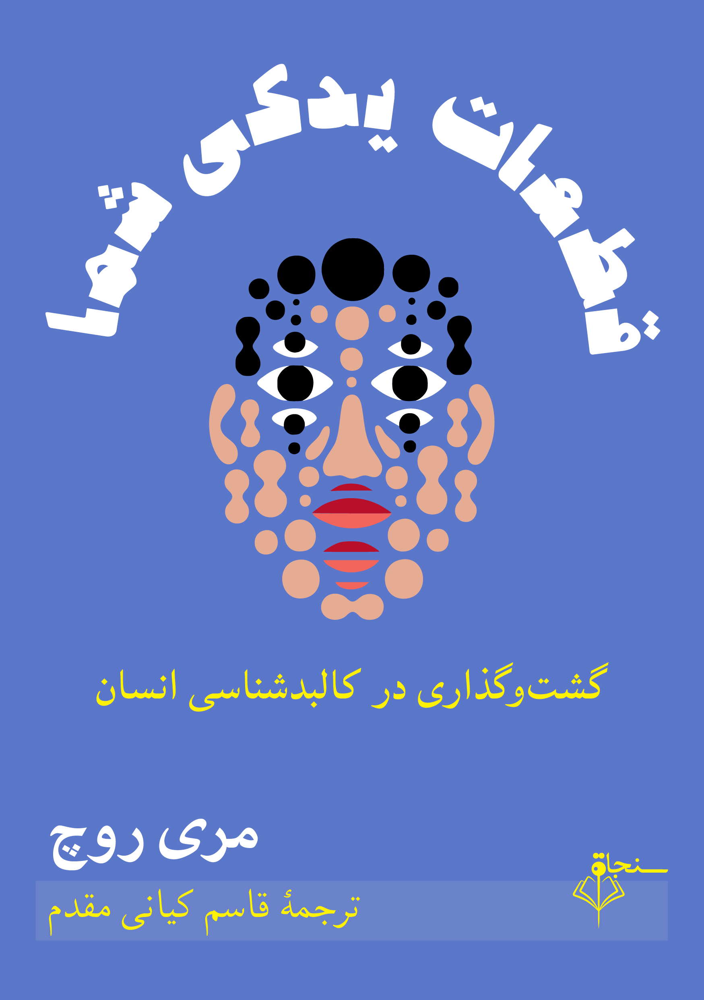

قطعات یدکی شما
گشتوگذاری در کالبدشناسی انسان

| عنوان | قطعات یدکی شما: گشتوگذاری در کالبدشناسی انسان |
|---|---|
| نویسنده | مری روچ |
| مترجم | قاسم کیانی مقدم |
| شابک | ۹۷۸-۶۲۲-۱۸۳۲-۸۸-۰ |
| ناشر | انتشارات سنجاق |
| سال نشر | ۱۴۰۵ |
معرفی
کاوشی پرشور و شگفتانگیز در عرصهٔ تلاش برای بازآفرینی پیچیدگیهای باورنکردنی کالبد انسان
بدن پیچیدهترین ماشین دنیا است و تنها ماشینی است که قطعات یدکی آن را نمیتوانید از سازنده دریافت کنید. در طول سدههای متمادی، علم پزشکی برای این منظور به همهچیز دست یازیده است: ساختن بینی از آلیاژ برنجی، گرفتن پوست از قورباغه و قلب از خوک، ساختن قطعات چشم از کانوپی جت و ایمپلنت پستان از فرآوردههای جانبی نفتی. و امروزه در تلاش است که قطعات بدن را با استفاده از سلولهای بنیادی و چاپگرهای سهبعدی از صفر بسازد. این پیشرفتها اکنون در چه وضعیتی است؟ آیا به مقصد رسیدهایم؟
در کتاب «قطعات یدکی شما»، مری روچ پیشرفتهای چشمگیر در زمینهٔ بازسازی اعضای بدن را شرح میدهد و پرسشهای دشواری را که بر اثر اختلال در بدن انسان مطرح میشود، بررسی میکند. مثلاً کِی و چگونه یک نفر به این نتیجه میرسد که باید اندام موجودش را قطع کند و بهجای آن از پروتز استفاده کند؟ آیا میتوان کاری کرد که یک قلب اهدایی برای همیشه بتپد؟ آیا روده میتواند جایگزین مناسبی برای واژن باشد؟
مری روچ با شور و شوق و شوخطبعی مسریاش در این حوزه به کاوش میپردازد. او در سفرهایش به دورترین نقاط جهان سر میزند، از جمله اتاق عمل یک واحد مشهور درمان سوختگی در بوستون، یک خوکدانی «فوقتمیز» برای پیوندهای بینگونهای در چین، و یک «پرورشگاه مو» از سلولهای بنیادی در قطب فناوری سندیِگو. او با پژوهشگران و جراحان، بیماران قطع عضو و دارندگان استومی، پژوهشگران چاپ سهبعدی کلیه، و طراحان اعضای مصنوعی پوشیدنی گفتوگو میکند. مدتی را درون یک ریهٔ آهنی فعال بهجامانده از دههٔ ۱۹۵۰ میگذراند، تمام شب را با تکنیسینهای بازیابی عضو همراه میشود که بافتهای یک اهداکننده را از بدن او جدا میکنند، و با جراحان آب مروارید چشم در مغولستان همسفر میشود.
این کتاب با بیانی نیرومند و سادهفهم، شما را به گشتوگذاری مفرح در دنیای باورنکردنی نوسازی و جایگزینی اعضای بدن میبرد.
برای تهیهٔ نسخهٔ چاپی این کتاب میتوانید از طریق ایمیل یا شبکههای اجتماعی با من تماس بگیرید.